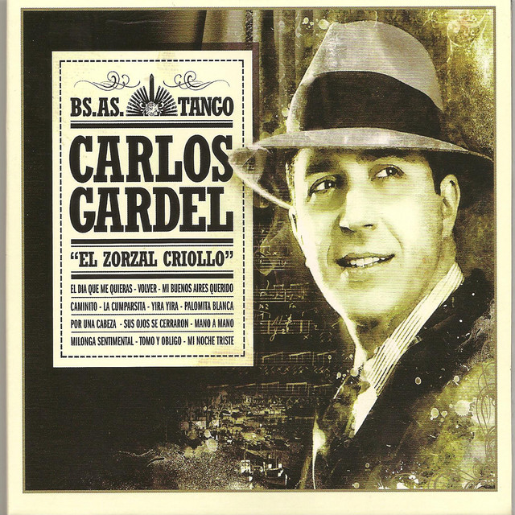
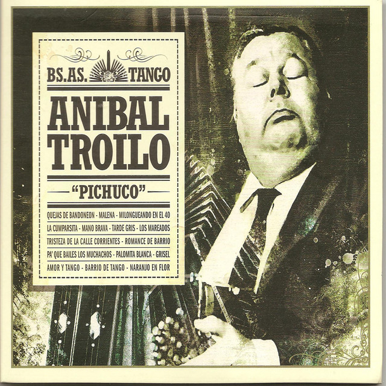
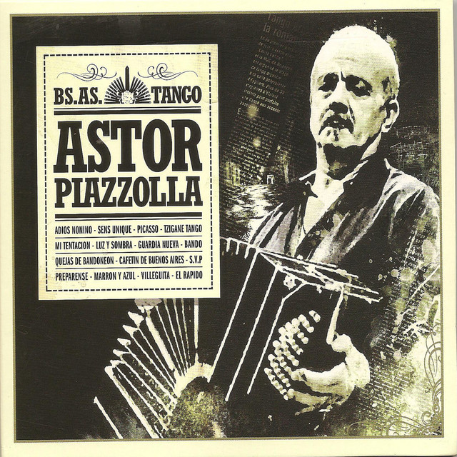
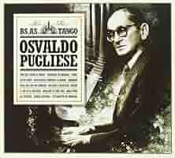
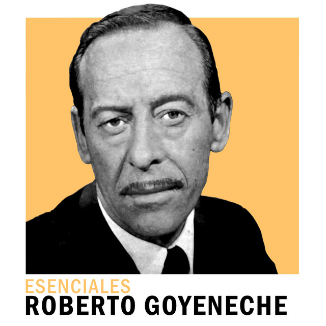
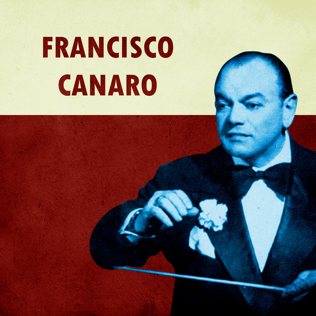

Carlos Gardel: el zorzal criollo que inmortalizó el tango
Publicado el 10 de septiembre de 2025
La voz inconfundible que llevó el tango desde Buenos Aires al mundo. Su legado, mezcla de pasión y melancolía, convirtió cada interpretación en un símbolo eterno de la cultura popular argentina.

Leer más
Discépolo: el filósofo del tango
Publicado el 8 de septiembre de 2025
Dramaturgo, músico y poeta, supo retratar la angustia social y el desencanto porteño con una crudeza única. Sus letras, cargadas de ironía y sensibilidad, hicieron del tango un espejo del alma argentina.
 Leer más
Leer más
Julio Sosa: la voz de hierro del tango
Publicado el 5 de septiembre de 2025
Con su estilo recio y apasionado, devolvió vigor al tango en los años 50 y 60. Sus interpretaciones intensas lo consagraron como “El Varón del Tango”, un ícono inmortal de la música ciudadana.
 Leer más
Leer más
Aníbal Troilo: el bandoneón mayor de Buenos Aires
Publicado el 12 de septiembre de 2025
Maestro del bandoneón y director de orquesta, "Pichuco" fue un ícono del tango porteño. Su estilo sensible y profundo marcó a generaciones de músicos y amantes del género.

Leer más
Astor Piazzolla: el revolucionario del tango
Publicado el 14 de septiembre de 2025
Innovador incansable, fusionó el tango con el jazz y la música clásica. Su “nuevo tango” rompió moldes, transformando la tradición sin perder la esencia de la pasión porteña.

Leer más
Osvaldo Pugliese: el pianista de la resistencia
Publicado el 16 de septiembre de 2025
Director de orquesta y compositor, Pugliese combinó compromiso social con arte. Su estilo enérgico y militante lo convirtió en una leyenda que trasciende la música.

Leer más
Julio Sosa: la voz varonil del tango
Publicado el 18 de septiembre de 2025
Conocido como “El Varón del Tango”, su voz potente y estilo apasionado lo posicionaron como uno de los cantores más influyentes de los años 50 y 60.
Leer más
Roberto Goyeneche: el “Polaco” del fraseo único
Publicado el 20 de septiembre de 2025
Dueño de un estilo inconfundible, Goyeneche convirtió cada verso en un relato íntimo. Su manera de frasear transformó la interpretación del tango para siempre.

Leer más
Francisco Canaro: el gran difusor del tango
Publicado el 22 de septiembre de 2025
Director, compositor y violinista, Canaro fue clave en la popularización del tango dentro y fuera de Argentina. Su orquesta marcó una época dorada en los salones de baile.

Leer más